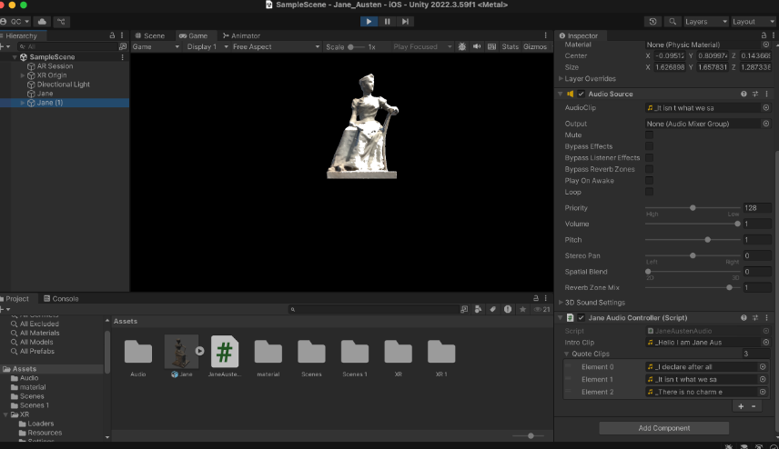

At this stage, I started developing an iOS augmented reality experience based on Unity and AR Foundation, themed around the writer Jane Austen. As part of my Winchester Cathedral AR project, this initiative aims to enable audiences to meet historical figures in AR, thereby fostering a stronger emotional connection.
Functional Objectives
The core features I aim to implement include:
- Auto-playing an introductory voiceover upon launch;
- Sequentially playing Jane Austen’s representative quotes when her model is clicked;
- Ensuring the 3D model appears stably in front of users in AR environments, enabling voice interaction.
Technical Implementation
- Used Unity 2022 and AR Foundation plugin, configured with ARKit to set up the AR scene;
- Added AR Session and AR Session Origin to the XR Origin, ensuring the main camera is enabled;
- Imported Jane Austen’s 3D model into the scene, attached Animator and Audio Source components;
- Wrote C# scripts to control the welcome voiceover at startup and trigger quote playback via click events;
- Fine-tuned the model’s position, scaling, and anchoring logic for consistent performance across devices.
Issues and Debugging
During development, I encountered two key problems:
- Camera Failure to Open
- Problem：ARKit initially failed to enable camera access properly. Although I’d correctly filled in the Camera Usage Description in Player Settings > iOS > Other Settings, the camera couldn’t activate on iOS devices, causing the AR view to remain black. Initial suspicions included unrecognized permissions, uninitialized AR Session, or plugin version compatibility issues.
2. Audio Not Playing
- Problem：The Audio Source component in Unity failed to load audio assets correctly, and the model’s playback logic wasn’t activated.
- Solutions：
◦ Confirmed audio files were properly imported into Project Assets and paths were correctly referenced in Audio Source.
◦ Added delay mechanisms (using Invoke() or Coroutine) to the script to ensure audio triggered after scene initialization.
◦ Debugged with Debug.Log() to track script flow, confirming click events and audio callbacks bound correctly. Now the model plays welcome voiceover on startup and quotes sequentially on click, with smooth audio and script operation.

What I gained
- Got familiar with the basic construction process of AR Foundation and the permission configuration of ARKit.
- Learned to control the voice interaction behavior of 3D models through scripts in Unity.
- Understood that the key to realizing emotional narrative in augmented reality environments lies in the design of detailed interactions and trigger logic. For example, characters introduce themselves first, then converse with users helps create a sense of presence.